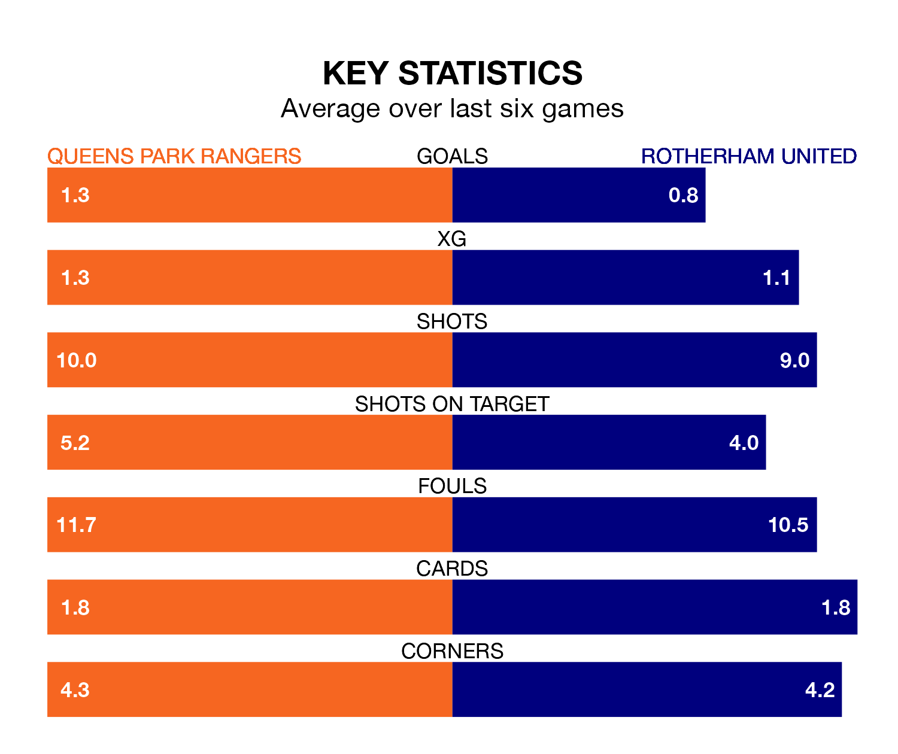

Struggling Queens Park Rangers face Rotherham United at Loftus Road on Saturday looking to build on a win in their last league outing.
After securing all three points with a 1-0 victory over Bristol City on February 17, QPR sit 22nd in EFL Championship.
They travel to play a Rotherham side 24th in the standings, who lost in their last match, 4-3 against Ipswich Town, on Tuesday.
QPR are in reasonable form in EFL Championship, with three wins and two draws from their last six games.
With no wins and a draw over that period, Rotherham's form is much worse – they have taken one point from 18, compared to Rangers's 11.
In the last 10 years, QPR and Rotherham have played each other on 12 occasions. They won four each, and they drew four times.
On average, QPR scored 1.9 goals and the Millers 1.6 in those matches.
Their last meeting was on November 4, when they played out a 1-1 draw.
With 29 goals in 33 games so far this season, United are the league's second-lowest scorers with 0.9 goals per game. And they are conceding more than average, letting in 64 goals at a rate of 1.9 per game.
The hosts are also below average scorers, with 0.9 goals per game, compared to a league average of 1.4. They have conceded 1.3 goals per game.
Updated: 10:08 (UTC), 23/02/24